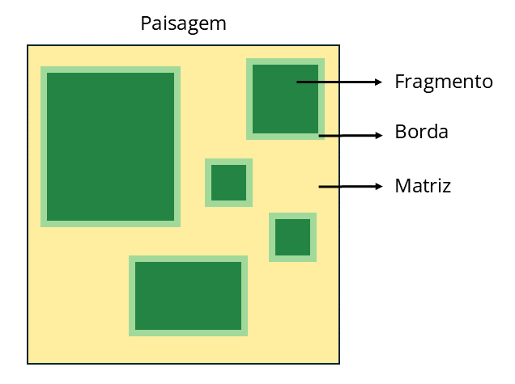
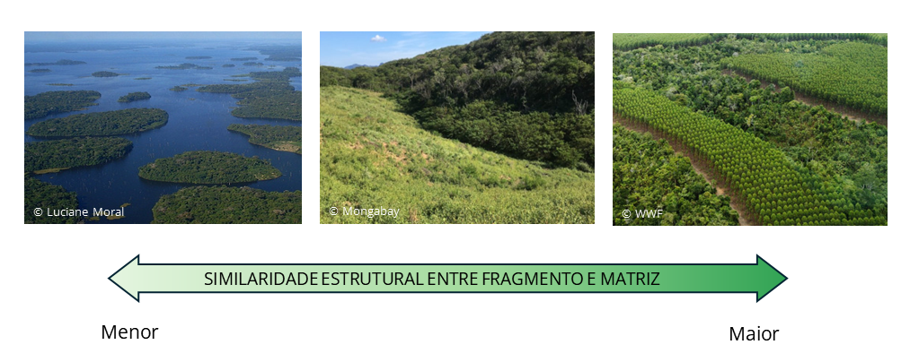

Glossário
1. Habitat - Ambiente com as condições e os recursos necessários para a sobrevivência, estabelecimento e reprodução de um organismo específico.2. Habitat complementar - Ambiente com condições e recursos necessários para completar o ciclo de vida de uma espécie.
3. Habitat suplementar - Ambiente adicional que fornece recursos extras, mas não essenciais para o ciclo de vida de uma espécie.
4. Matriz - Ambiente adjacente aos fragmentos, como pastagem ou florestas secundárias.
5. Borda - Área de encontro entre o fragmento e a matriz.
6. Efeitos de borda - Alterações nas condições bióticas e abióticas nas bordas, que influenciam as espécies e os processos ecológicos.
7. Stepping stones - Áreas intermediárias que funcionam como trampolins para conectar habitats principais ou fragmentos maiores, como pequenos fragmentos de floresta.
A expansão das atividades humanas tem, cada vez mais, levado à perda e fragmentação de diferentes ambientes naturais (e.g., florestas, mangues, campos), que são habitat para diversas espécies. Atividades como a agropecuária, a superexploração de recursos naturais e, até mesmo, a expansão urbana são onipresentes (veja Maxwell et al., 2016) e influenciam as espécies de diferentes maneiras.
Enquanto a perda do habitat dessas espécies se caracteriza pela diminuição do total de habitat disponível para elas, a fragmentação é a divisão desse habitat em fragmentos menores sem alterar a quantidade total de habitat disponível na paisagem (Fahrig, 2003).
Esses dois processos frequentemente ocorrem simultaneamente, transformando paisagens de habitat natural contínuo em paisagens modificadas compostas por fragmentos de habitat cercados por um ambiente diferente, conhecido como matriz (Fig. 1; Haddad et al., 2015). Entender o papel da matriz nessas paisagens modificadas é crucial para o desenvolvimento de estratégias de conservação eficazes, que integrem a preservação da biodiversidade com benefícios econômicos tangíveis para as pessoas.

A matriz, também chamada de não-habitat, é o ambiente adjacente aos fragmentos e pode apresentar diferentes graus de similaridade estrutural com eles (Fig. 2). O tipo de matriz adjacente aos fragmentos é importante (Prevedello e Vieira, 2010) porque, quanto mais estruturalmente similar a matriz for aos fragmentos (e.g., florestas secundárias, plantações de árvores), maior será sua qualidade. Fatores como o tipo de vegetação, o grau de perturbação humana e a presença de elementos naturais, como corredores ripários, influenciam essa qualidade.

A matriz, de acordo com sua qualidade, pode:
- Influenciar a movimentação das espécies na paisagem
- Atuar como habitat suplementar ou complementar para as espécies
- Amenizar ou intensificar os efeitos de borda
- Servir como fonte de espécies
- Influenciar no fornecimento de serviços ecossistêmicos
Movimentação das espécies na paisagem
A movimentação das espécies está diretamente ligada à conectividade da paisagem. Esta, por sua vez, é influenciada pela qualidade da matriz adjacente aos fragmentos florestais e pela presença de estruturas naturais e semi-naturais que facilitem essa movimentação, como fragmentos menores, árvores dispersas pela matriz, cercas-vivas e corredores. Se a matriz é estruturalmente contrastante (i.e., de baixa qualidade), como uma pastagem, e há ausência de stepping stones, a movimentação das espécies florestais é limitada (Boesing et al., 2021).
Isso ocorre porque muitas espécies de aves florestais evitam cruzar áreas abertas (veja Stouffer e Bierregaard, 1995). Matrizes abertas apresentam maior risco de predação devido à falta de cobertura protetora e ao aumento da densidade de predadores (Biz et al., 2017). Por isso, nessas matrizes, as aves tendem a se mover rapidamente e fazem caminhos diretos em direção ao fragmento florestal mais próximo. Por outro lado, em matrizes mais semelhantes aos fragmentos, como plantações de árvores, as aves permanecem por mais tempo e exploram mais os recursos disponíveis (veja Biz et al., 2017).
Habitat suplementar e/ou complementar para as espécies
Uma espécie pode buscar habitat suplementar e/ou complementar por diversos motivos, pois eles oferecem uma variedade de recursos, como alimentos, locais de nidificação e abrigo. Entre esses motivos está o fato de que, quando o habitat é alterado, a espécie ainda pode sobreviver utilizando outros habitats disponíveis. Assim, utilizar múltiplos habitats aumenta a resiliência da espécie em relação a essas alterações.
Para aves florestais, é considerado que a vegetação do sub-bosque é um importante preditor da diversidade desse grupo (Aratrakorn et al., 2006), porque é onde muitas aves podem encontrar alimento, abrigo e sítios de nidificação. Assim, matrizes mais estruturalmente parecidas e com maior presença de sub-bosque apresentarão maior diversidade de aves (veja Cardoso et al., 2023). Por outro lado, matrizes mais estruturalmente diferentes oferecerão menos recursos, o que poderá resultar em uma menor diversidade de aves nos fragmentos florestais cercados por essas matrizes (de Camargo Barbosa et al., 2017).
Efeitos de borda
A matriz adjacente aos fragmentos também pode influenciar a intensidade dos efeitos de borda que adentram os fragmentos, de acordo com a similaridade estrutural com eles. Se a matriz for estruturalmente similar, a intensidade dos efeitos de borda pode ser amenizada. Efeitos de borda, como mudanças microclimáticas, mortalidade de árvores e evitação de bordas por aves do sub-bosque, são todos reduzidos quando os fragmentos são cercados por florestas secundárias em regeneração, em comparação com fragmentos cercados por pastagens (veja Laurance et al., 2017).
Quando a matriz é estruturalmente dissimilar e os efeitos de borda são intensificados, muitas espécies não conseguem tolerar as novas condições abióticas e bióticas nos fragmentos e desaparecem. Um exemplo disso são os fragmentos do Projeto Dinâmica Biológica de Fragmentos Florestais (PDBFF), onde muitas espécies de aves florestais insetívoras de sub-bosque desapareceram quando os fragmentos eram cercados por pastagens, mas retornaram quando a matriz passou a ser floresta secundária de Cecropia em regeneração (veja Stouffer e Bierregaard, 1995).
Fonte de espécies
Assim como os fragmentos florestais (i.e., floresta) são habitat para algumas espécies, a matriz adjacente pode ser o habitat de outras. Por exemplo, a floresta é o habitat do papa-formiga-de-topete, enquanto os campos com gramíneas são o habitat do tico-tico-do-campo. Existem também aves generalistas em relação ao habitat, como a corruíra, que podem viver em mais de um tipo de habitat.
Quando o ambiente é alterado e a matriz é imposta, cria-se um novo ambiente onde a matriz e o fragmento se encontram, denominado borda. A borda pode ser uma área com maior riqueza de espécies, pois pode receber espécies tanto da matriz quanto do interior do fragmento (veja Ewers et al., 2007; Magura, 2002). No entanto, outros cenários são possíveis na borda, dependendo da similaridade entre a matriz e os fragmentos.
Em alguns casos, a borda inicialmente apresenta maior riqueza, mas, ao longo do tempo, as espécies que não conseguem tolerar as condições (i.e., efeitos de borda) nesse ambiente desaparecem e são substituídas por espécies mais adaptadas (Russildi et al., 2016). Esses cenários podem acontecer quando a matriz é pastagem, como é o caso dos estudos citados acima.
Por outro lado, também é possível que as espécies sensíveis desapareçam sem serem substituídas, resultando em uma borda empobrecida. Isso é esperado quando a matriz é ainda mais dissimilar e hostil para as espécies, como no caso da matriz aquática (Watson, 2002).
Serviços ecossistêmicos
As aves desempenham diversos serviços ecossistêmicos. Por exemplo, aves insetívoras ajudam no controle de pragas, aves frugívoras dispersam sementes e aves nectarívoras contribuem para a polinização.
Em fragmentos cercados por diferentes matrizes, as condições na borda variam, o que influencia a prestação desses serviços ecossistêmicos pelas aves.
Fragmentos cercados por pastagens apresentam maior contraste estrutural, com bordas mais expostas à luz. Essas condições podem favorecer determinadas plantas que oferecem maior disponibilidade de frutos e flores, atraindo mais aves frugívoras e nectarívoras. Essas aves, por sua vez, fornecem dispersão de sementes e polinização. Por outro lado, quando os fragmentos são cercados por matrizes mais similares ao fragmento, como plantações de eucalipto, pode ocorrer uma redundância de recursos. Nesse caso, os recursos disponíveis na floresta também estarão presentes na matriz, o que pode não resultar em um aumento significativo na prestação de serviços ecossistêmicos (veja Barros et al., 2019).
Como aumentar a qualidade da matriz?
Arroyo-Rodriguez et al. (2020) sugerem que, para aumentar a qualidade da matriz, é necessário manter matrizes menos contrastantes, como agroflorestas e florestas secundárias, além de preservar árvores dispersas na matriz e manter um grande número de pequenos fragmentos. Isso facilitará a movimentação das espécies na paisagem, minimizará os efeitos de borda e promoverá o uso da matriz por espécies florestais.
Nesse mesmo artigo, os autores mostram como é possível planejar paisagens que busquem tanto a conservação da biodiversidade quanto benefícios para nós. Um exemplo disso é a presença de matrizes agroflorestais, como as cabrucas em paisagens modificadas. Essas matrizes, além de contribuir para a conservação da biodiversidade, também trazem lucro para os produtores.
Conclusão
A matriz desempenha um papel crucial em paisagens fragmentadas. Sua qualidade pode influenciar significativamente a riqueza, a composição e a movimentação de espécies na paisagem, bem como o fornecimento de serviços ecossistêmicos. Considerar a matriz como um ponto-chave em estratégias de conservação é essencial para a criação de paisagens resilientes e sustentáveis.